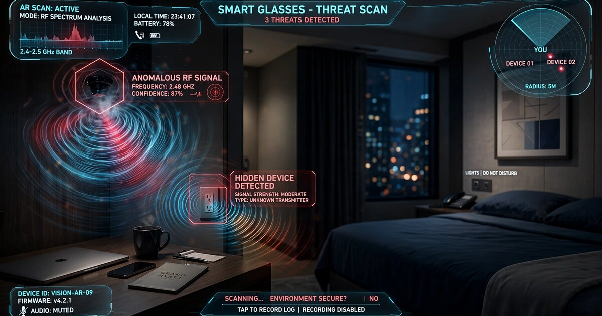

System and Method for Passive Detection and Geolocation of Covert Electronic Devices Using Wearable Multi-Antenna Radio-Frequency Emanation Analysis with On-Device Neural Classification

Abstract
Disclosed is a system and method for passively detecting, classifying, and geolocating covert electronic surveillance devices using radio-frequency (RF) emanation analysis performed by consumer wearable hardware. Every electronic device emits unintentional electromagnetic emissions (UEE) from its clock oscillators, switch-mode power regulators, and digital data buses. These emissions produce device-type-specific spectral signatures in the 30 MHz to 6 GHz range that persist regardless of whether the device is actively transmitting on any communication protocol. The system exploits the physical geometry of wearable form factors, particularly smart glasses frames providing a 130-150 mm inter-antenna baseline, to perform angle-of-arrival (AoA) estimation and triangulate the spatial position of detected emitters. An on-device convolutional neural network classifies received spectral signatures against a threat library of known surveillance device emission profiles, distinguishing covert cameras, audio recorders, GPS trackers, and cellular IMSI catchers from legitimate consumer electronics. A federated learning pipeline enables continuous model improvement across deployed devices without centralizing raw RF captures. Results are presented to the wearer via augmented reality spatial markers overlaid on the camera passthrough view, indicating the estimated location and classification of each detected device.
Field of the Invention
This invention relates to electronic counter-surveillance using consumer wearable devices, specifically to the passive detection and geolocation of covert electronic devices by analyzing their unintentional electromagnetic emissions with multi-antenna wearable arrays and neural network classification.
Background
Hidden surveillance devices represent a growing threat across multiple contexts. A Federal Trade Commission analysis of consumer complaints shows stalking-related technology reports more than tripled between 2018 and 2023. Airbnb prohibits hidden cameras in rental properties, yet investigative journalism by CNN (2019) and IPVM (2023) has documented hundreds of incidents across vacation rentals, hotels, and changing rooms. Corporate espionage involving planted listening devices costs U.S. businesses an estimated $300 billion annually in stolen intellectual property (ASIS International).
Current counter-surveillance detection methods fall into three categories, each with substantial limitations:
- Professional TSCM sweeps: Technical Surveillance Countermeasures (TSCM) operators use broadband spectrum analyzers (e.g., REI OSCOR Green, $20,000-$40,000), non-linear junction detectors (NLJD, e.g., Lornet-36, $8,000-$15,000), and thermal imagers. A single-room sweep costs $500-$2,000 and takes 2-4 hours. This approach is episodic, expensive, and unavailable to most individuals.
- Consumer RF detectors: Handheld bug detectors ($20-$200, e.g., Spy Hawk Pro-10G) scan for active RF transmissions. They cannot detect devices that record locally and transmit in bursts or on retrieval. They produce high false-positive rates because they cannot distinguish a hidden camera's WiFi from a legitimate IoT device on the same channel. No classification or spatial localization capability.
- Smartphone-based camera finders: Apps that use the phone's camera to detect infrared LEDs on night-vision cameras, or use the magnetometer to sense magnetic fields from camera lenses. Sharma et al., ACM IMWUT 2022 demonstrated smartphone magnetometer detection of pinhole cameras at distances under 15 cm. This requires physically scanning every surface at close range, making it impractical for room-scale sweeps.
The unintentional electromagnetic emission (UEE) phenomenon is well-characterized in the TEMPEST literature. NSA TEMPEST standards define emission security requirements for classified equipment precisely because all digital electronics radiate detectable RF energy. Research by Camurati et al., IEEE S&P 2018 demonstrated extraction of cryptographic keys from unintentional EM emissions of microcontrollers at distances exceeding 10 meters using laboratory equipment. Cheng et al., IEEE Access 2020 showed that IoT devices can be classified by their clock oscillator harmonics using a software-defined radio receiver.
Smart glasses and earbuds with integrated antennas are now shipping at scale. Meta Ray-Ban glasses contain Bluetooth and WiFi antennas spaced across the frame. Apple AirPods Pro include multiple antennas per earbud. These antenna elements could function as a receive-only array for UEE detection without hardware modification, requiring only firmware changes to expose raw RF samples to an on-device classifier.
The gap in the art is a complete system that: (a) uses existing wearable antenna arrays as passive RF emanation sensors without dedicated counter-surveillance hardware, (b) classifies detected emissions by device type using on-device neural networks rather than requiring human interpretation of spectral displays, (c) estimates the spatial location of emitting devices using angle-of-arrival across the wearable's multi-antenna geometry, and (d) presents results via AR overlay for intuitive threat visualization.
Detailed Description
1. Wearable Antenna Array Geometry
The system leverages antenna elements already present in consumer wearables. Smart glasses frames provide two primary antenna locations at the left and right temples, separated by 130-150 mm depending on frame geometry. This baseline enables angle-of-arrival estimation with angular resolution of approximately ±5° at 2.4 GHz (wavelength 125 mm) and ±2° at 5.8 GHz (wavelength 52 mm), computed via the diffraction limit formula θ = λ/d where d is the antenna separation.
When the wearer also carries wireless earbuds with Bluetooth antennas, the effective array extends to a four-element irregular planar array spanning the head: left temple, right temple, left ear canal, right ear canal. A wrist-worn smartwatch provides a fifth element with a vertical baseline of approximately 1.2 meters from the head-mounted elements, enabling elevation-angle estimation. The system dynamically computes the array manifold from the known relative positions of each wearable device, obtained via IMU-based body pose estimation or factory-calibrated offsets.
Each antenna element operates in receive-only mode across a wideband front-end (30 MHz to 6 GHz). No transmission occurs during scanning, making the system completely passive and undetectable. The RF front-end samples at 12.5 Msps (megasamples per second) minimum, with a digital down-converter channelizing the wideband capture into 256 narrowband sub-channels of approximately 48.8 kHz each for parallel spectral analysis.
2. Unintentional Emission Signature Taxonomy
Electronic devices produce characteristic UEE signatures based on their internal architecture. The system maintains a signature taxonomy organized by device class:
- Covert cameras (CMOS/CCD): Image sensors generate clock harmonics from their pixel readout oscillators, typically at 24-27 MHz fundamental with harmonics extending to 1.5 GHz. Frame-rate-correlated modulation at 25/30/60 Hz creates sideband signatures that are absent in non-imaging electronics. Hayashi et al., IACR CHES 2019 demonstrated distinguishing active cameras from inactive ones by detecting frame-synchronous EM emissions.
- Audio recorders: MEMS microphone bias circuits and ADC clock oscillators produce narrowband emissions at their sampling rates (8-48 kHz) and clock frequencies (1-20 MHz). Audio compression DSP creates broadband processing noise distinguishable from simple analog recorders.
- GPS trackers: GPS receiver front-ends produce local oscillator leakage at L1 frequency (1575.42 MHz ± IF offset, typically 4.092 MHz). The correlator banks create periodic spectral features at the C/A code chipping rate (1.023 MHz) and its harmonics.
- IMSI catchers / rogue base stations: These devices transmit intentionally but can also be identified by their UEE profile during idle periods. The FPGA or DSP cores processing baseband signals emit clock harmonics distinct from commercial femtocells. Their power amplifier bias networks produce intermodulation products absent in legitimate cell infrastructure.
- Legitimate devices (negative class): WiFi routers, smart speakers, laptops, and phones produce their own UEE, but with spectral signatures that the classifier learns to distinguish from surveillance equipment. Key differentiators include clock frequency stability (consumer devices use lower-tolerance oscillators), emission power levels, and the presence of standard communication protocol preambles alongside the UEE.
3. Signal Acquisition and Preprocessing Pipeline
Each antenna element independently samples the RF environment in 100 ms capture windows, triggered every 2 seconds during continuous scanning mode or every 200 ms during focused-scan mode (user-initiated). The preprocessing pipeline executes the following steps on each capture:
- Ambient profile subtraction: A running 60-second median spectrum estimate is maintained and subtracted from each new capture, isolating transient and narrowband emissions above the noise floor. This eliminates strong legitimate signals (FM broadcast, cellular downlinks, WiFi beacons) that would otherwise dominate the spectrum.
- Harmonic series extraction: A harmonic product spectrum (HPS) algorithm identifies fundamental frequencies and their harmonic ladders up to the 12th harmonic. Clock oscillators produce clean harmonic series with predictable amplitude rolloff; the HPS output compresses each harmonic series into a single fundamental-frequency bin with a confidence score.
- Cyclostationary feature extraction: The spectral correlation function (SCF) is computed for each detected narrowband emission, revealing periodic modulation patterns. Camera frame rates, ADC sampling clocks, and GPS correlator cycles all produce cyclostationary features at their respective periodicities. The SCF distinguishes modulated signals from continuous-wave oscillator leakage.
- Feature vector assembly: Each detected emission source produces a 256-dimensional feature vector comprising: 64 spectral magnitude bins (log-compressed), 64 cyclostationary period bins, 64 harmonic ratio coefficients, 32 temporal stability metrics (emission persistence across successive captures), and 32 modulation bandwidth estimates.
4. On-Device Neural Classification
A lightweight 1D convolutional neural network processes each 256-dimensional feature vector. The architecture comprises: an input layer accepting the 256-element feature vector reshaped as a 1D signal, three convolutional blocks (32/64/128 filters, kernel size 5, batch normalization, ReLU, max-pool), a global average pooling layer, a 256-unit dense layer with dropout (0.3), and a softmax output over 8 classes: covert camera, audio recorder, GPS tracker, IMSI catcher, wireless video transmitter, burst transmitter, legitimate device, and unknown.
The model is quantized to INT8 via post-training quantization, yielding a binary size of approximately 420 KB. Inference latency is under 8 ms on a Qualcomm QCS6490 (the SoC in current-generation smart glasses), enabling real-time classification of up to 50 detected emission sources per scan cycle.
Training data comes from three sources: laboratory measurements of 200+ surveillance devices purchased from consumer and grey-market sources, captured in an anechoic chamber with calibrated receivers; synthetic data generated by physics-based EM simulation (CST Studio Suite) of known circuit topologies; and field recordings from controlled deployments in hotel rooms, offices, and vehicles with known ground truth. The training set contains approximately 2.3 million labeled feature vectors across all classes, with class-balanced sampling and aggressive augmentation (SNR variation ±20 dB, frequency offset ±0.1%, harmonic amplitude perturbation).
5. Spatial Localization via Angle-of-Arrival
For each emission classified as a potential threat (confidence ≥ 0.6), the system computes the angle-of-arrival (AoA) using the phase difference between antenna elements. With two glasses-frame antennas separated by distance d, the azimuth angle θ is computed from the phase difference Δφ between the signals received at each antenna:
θ = arcsin(Δφ · λ / (2π · d))
where λ is the wavelength of the detected emission. When additional wearable antennas are available (earbuds, watch), the MUSIC (Multiple Signal Classification) algorithm resolves multiple simultaneous emitters and estimates both azimuth and elevation angles. The MUSIC algorithm computes the noise subspace from the spatial covariance matrix of the multi-antenna captures and searches for angles that maximize the pseudospectrum, achieving super-resolution beyond the diffraction limit when SNR exceeds 10 dB.
Range estimation uses two complementary methods. First, as the wearer moves naturally through a space, successive AoA measurements from different positions enable triangulation. The system tracks the wearer's position via visual-inertial odometry (VIO) from the glasses' IMU and camera, then intersects AoA lines from at least three spatially separated measurement points. Second, for stationary detection, the received signal strength indicator (RSSI) combined with the classified device type provides an approximate range estimate using calibrated path-loss models (free-space for line-of-sight, empirical for through-wall).
The spatial estimate is refined over time using an extended Kalman filter (EKF) that fuses successive AoA measurements with the wearer's VIO trajectory. After 30-60 seconds of natural movement in a room, the system achieves an estimated localization accuracy of ±0.5 m for emissions above 1 GHz and ±2 m for emissions below 500 MHz.
6. Augmented Reality Threat Visualization
Detected and localized threats are rendered as spatial markers in the smart glasses' AR display. Each marker comprises: a 3D icon indicating device class (camera icon, microphone icon, location pin, cell tower), color-coded by confidence level (red: ≥ 0.9, orange: 0.7-0.9, yellow: 0.6-0.7), with a pulsing animation whose frequency matches the detected emission's dominant periodicity, providing the wearer an intuitive sense of the emission's temporal behavior. Markers are anchored to world coordinates via the glasses' SLAM (simultaneous localization and mapping) pipeline and persist as the wearer moves through the space.
A companion heads-up summary shows: total number of detected emitters by class, overall threat assessment (clear/caution/alert), and elapsed scan time. The wearer can tap a marker to see a detailed emission spectrum plot, classification confidence breakdown, and recommended physical inspection guidance ("check behind smoke detector at 2 o'clock, 3 meters").
7. Federated Learning for Continuous Model Improvement
The classification model improves over time via federated learning. When a wearer confirms or corrects a detection (e.g., marks a flagged emission as a false positive from a known device, or confirms a hidden camera was found at the indicated location), the local model computes gradient updates from the correction. These gradients are aggregated using Secure Aggregation protocol across a minimum of 1,000 participating devices before updating the global model, ensuring no individual RF capture or location is recoverable from the update.
Differential privacy is enforced by clipping per-device gradient contributions to a norm bound of ε = 2.0 and adding calibrated Gaussian noise (σ = 1.1) to the aggregated update, providing (ε, δ)-differential privacy with ε = 4.0 and δ = 10⁻⁶ per training round. The updated global model is distributed to all devices via standard over-the-air firmware update channels.
A local adaptation layer allows the model to learn device-specific false-positive patterns. If the wearer's own WiFi router consistently triggers a low-confidence alert, the local model suppresses that specific emission signature after three consecutive dismissals without modifying the global model. This personalization layer contains fewer than 5,000 parameters and is stored only on-device.
8. Operational Modes
- Passive continuous mode: Scans every 2 seconds, draws less than 15 mW additional power. Suitable for always-on background monitoring. Alerts only on high-confidence (≥ 0.85) threat detections.
- Active sweep mode: User-initiated, scans every 200 ms with all available antennas. Prompts the wearer to walk a specific path through the space for optimal triangulation coverage. Completes a room scan in 60-90 seconds with full spatial mapping.
- Forensic mode: Records raw RF captures to local encrypted storage for later analysis by TSCM professionals. Extends capture bandwidth to full 6 GHz and increases capture window to 500 ms for maximum spectral resolution.
9. Figures Description
- Figure 1: System architecture showing wearable antenna array geometry (glasses + earbuds + watch), RF front-end, preprocessing pipeline, neural classifier, spatial localizer, and AR display output.
- Figure 2: Unintentional electromagnetic emission spectra for five representative covert device types, showing distinctive harmonic series patterns, cyclostationary features, and classification boundaries.
- Figure 3: Angle-of-arrival geometry using smart glasses frame antennas, showing phase-difference-based azimuth estimation and MUSIC pseudospectrum for multi-emitter resolution.
- Figure 4: AR threat visualization mockup showing spatial threat markers overlaid on a hotel room scene, with detection confidence indicators and device class icons.
- Figure 5: Federated learning pipeline showing on-device gradient computation, secure aggregation across devices, differential privacy noise injection, and global model distribution.
Claims
- A system for passive detection of covert electronic devices, comprising: a plurality of antenna elements distributed across one or more consumer wearable devices worn on the body; an RF front-end operating in receive-only mode across a frequency range of at least 30 MHz to 6 GHz; a preprocessing module that extracts spectral, cyclostationary, and harmonic features from received electromagnetic emissions; and an on-device neural network classifier that identifies covert electronic device types from their unintentional electromagnetic emission signatures.
- The system of claim 1, wherein the plurality of antenna elements includes at least two elements mounted on a smart glasses frame, separated by 100-160 mm along the horizontal axis, and the system computes angle-of-arrival estimates for detected emissions using phase-difference measurements between the antenna elements.
- The system of claim 2, further comprising one or more additional antenna elements located on wireless earbuds or a wrist-worn device, extending the effective array aperture for both azimuth and elevation angle estimation using the MUSIC algorithm or equivalent super-resolution direction-finding technique.
- The system of claim 1, wherein the preprocessing module performs ambient profile subtraction using a running median spectrum estimate, harmonic product spectrum analysis for fundamental frequency extraction, and spectral correlation function computation for cyclostationary feature detection.
- The system of claim 1, wherein the neural network classifier distinguishes among at least the following device classes: covert cameras identified by image-sensor pixel-readout clock harmonics and frame-rate-correlated modulation sidebands; audio recorders identified by MEMS microphone bias emissions and ADC clock signatures; GPS trackers identified by local oscillator leakage near the L1 frequency; and IMSI catchers identified by baseband processor emission patterns distinct from legitimate cellular infrastructure.
- The system of claim 1, further comprising a spatial localization module that fuses successive angle-of-arrival measurements with the wearer's trajectory estimated via visual-inertial odometry to triangulate the three-dimensional position of each detected emitting device using an extended Kalman filter.
- The system of claim 6, further comprising an augmented reality display that renders spatial markers at the estimated locations of detected covert devices, wherein markers are color-coded by classification confidence and annotated with device class icons, and wherein markers are anchored to world coordinates via the wearable's SLAM pipeline.
- A method for detecting covert electronic devices using consumer wearable hardware, comprising: receiving electromagnetic emissions across a wideband frequency range at a plurality of antenna elements distributed across one or more wearable devices on a person's body; subtracting an ambient spectral profile to isolate emissions above the environmental noise floor; extracting harmonic series, cyclostationary features, and spectral magnitude features from each isolated emission; classifying each emission as a known surveillance device type or legitimate electronics using an on-device neural network; estimating the spatial location of emissions classified as potential threats using angle-of-arrival analysis across the wearable antenna array; and presenting detection results to the wearer via an augmented reality overlay.
- The method of claim 8, further comprising a federated learning step wherein user-confirmed or user-corrected detection outcomes generate local gradient updates that are aggregated across a minimum number of participating devices using secure aggregation with differential privacy guarantees, and the resulting global model update is distributed to all participating devices.
- The method of claim 8, further comprising a local adaptation layer that learns to suppress specific emission signatures that the individual wearer repeatedly dismisses as false positives, without modifying the global classification model.
- The system of claim 1, wherein the system operates in at least two modes: a passive continuous mode scanning at intervals of 1-5 seconds with power consumption below 20 mW, and an active sweep mode scanning at intervals of 100-500 ms that guides the wearer along a path optimized for triangulation geometry.
- The system of claim 1, wherein the system identifies covert cameras that are recording locally but not actively transmitting, by detecting the unintentional electromagnetic emissions of the camera's image sensor, storage controller, and power management circuits, which persist regardless of the device's communication state.
Implementation Notes
A proof-of-concept prototype can be constructed using a pair of HackRF One software-defined radios ($300 each) mounted on a glasses frame with 3D-printed brackets, connected to a Raspberry Pi 4 running the classification pipeline in Python with TensorFlow Lite. Laboratory validation should begin in an RF-shielded environment to establish baseline detection ranges for each device class before progressing to realistic indoor environments with ambient RF clutter.
The primary engineering challenge is sensitivity. Consumer wearable antenna elements are small (5-15 mm) and optimized for specific communication bands, not broadband reception. UEE signal levels from covert devices range from -80 dBm to -120 dBm at 3 meters, depending on device construction and shielding. Achieving useful detection range (3-10 meters) with consumer-grade front-ends will require careful noise figure optimization and extended integration times. A production implementation may benefit from a dedicated low-noise amplifier (LNA) die integrated into the glasses' RF module, adding approximately $0.50 to the bill of materials.
The legal framework for passive RF reception varies by jurisdiction. In the United States, the 47 U.S.C. § 605 restriction on intercepting wire or radio communications does not apply to unintentional emissions, which are explicitly excluded from the definition of "radio communication" under 47 U.S.C. § 153(40). The system receives only emanations, never demodulates or records the content of any intentional communication.
Prior Art References
- 35 U.S.C. § 102(a)(1) – Prior art statutory basis for defensive disclosure
- Camurati et al., IEEE S&P 2018 – Extraction of cryptographic keys from unintentional EM emissions at >10 m
- Cheng et al., IEEE Access 2020 – IoT device classification via clock oscillator harmonics using SDR
- Hayashi et al., IACR CHES 2019 – Distinguishing active cameras by frame-synchronous EM emissions
- Sharma et al., ACM IMWUT 2022 – Smartphone magnetometer detection of pinhole cameras at <15 cm
- NSA TEMPEST standards – Emission security requirements for classified equipment
- FTC consumer complaint data – Stalking-related technology report trends
- Airbnb hidden camera policy – Platform prohibition on surveillance devices
- IPVM, 2023 – Investigative reporting on hidden cameras in vacation rentals
- 47 U.S.C. § 605 – Unauthorized publication or use of communications
- 47 U.S.C. § 153(40) – Definitions: radio communication excludes unintentional emissions
- Cheng et al., arXiv 2021 – RF fingerprinting survey for IoT device identification
- TensorFlow Lite for Microcontrollers – On-device ML inference runtime
- Qualcomm QCS6490 – Wearable/XR SoC with neural processing unit